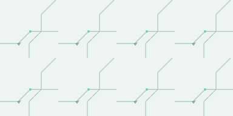
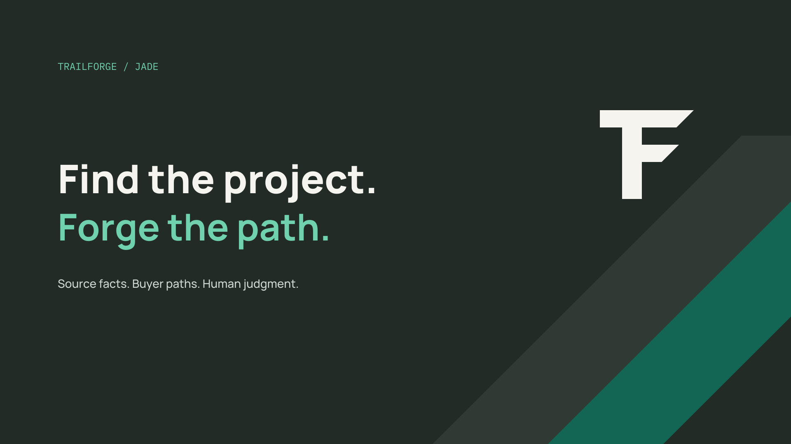

Find the work
Look for the project and its people before looking for the fuel.
PROJECT-FIRST POWER INTELLIGENCE
A clear, evidence-led identity for the work that starts before the power need is fully known.
THE OPERATING BELIEF
Trailforge helps an operator find early power projects, understand the customer and buyer path, and decide what to do next. Source facts stay connected to the work. Missing information stays visible. Human judgment remains in the loop.
Look for the project and its people before looking for the fuel.
Keep the excerpt, dates, reviewer and open questions close to each claim.
Prepare a thoughtful customer conversation. The operator decides what happens.
Promise boundary Trailforge does not promise forecast accuracy, verified customer intent, autonomous outreach or comprehensive discovery.
ONE CONTINUOUS ROUTE
The mark fuses the shared structure of the Trailforge initials into one compact route. The upper bar establishes direction; the stepped path turns from horizontal movement into a grounded vertical stem.
100-unit grid · 14-unit cap · 16-unit stem · 45° terminals
The stepped terminals use the same 45° cut across the symbol. Preserve the supplied vector master when reproducing the mark.
Keep clear space on every side equal to one quarter of the mark height.
Use 24 px or larger for the full mark. Use the simplified favicon file at 16 px.
Keep the symbol at least 10 mm high. Horizontal signature: 35 mm wide minimum.
Keep the horizontal logo 120 px wide or larger on screen.
Flat color, supplied geometry, generous space, approved contrast pairs.
Stretching, rotation, shadows, gradients in the mark, recoloring per letter, outlines or new terminals.
CONSISTENT SIGNATURES
The TRAILFORGE wordmark is set in Manrope ExtraBold and shipped as outlined paths. The icon is the canonical Trailmark. Color variants change only the foreground value.
APPLICATION ICON
Square jade field, inset white mark, rounded 22% silhouette. The mark stays flat and centered.
GROUNDED, CLEAR, HUMAN
Jade is the action color. Graphite anchors the system. Warm paper and mist make space for evidence. Mint and brass are accents; they do not replace labels.
#126653Primary action · core identity#232B26Navigation · primary text#F5F4EEPage canvas · open space#EEF4EFSecondary surface · quiet grouping#70D1AEGraphite accent · route highlight#B49A60Graphite label · restrained signalContrast ratios use the WCAG relative-luminance formula, rounded to two decimals. Values above 4.5:1 meet AA for normal text; 3:1 is the minimum for large text. Ratios are evidence for these exact color pairs only.
13.19:1AAA · normal text6.88:1AA · normal text5.53:1AA · normal text7.90:1AAA · normal text5.35:1AA · normal text7.23:1AAA · normal textUse bright accents with intent. Mint and brass work on graphite at the measured ratios shown. Do not place either as small text on warm paper without a separately measured pairing.
DIRECT, EDITORIAL, PRECISE
Use local font files from this package. Manrope handles product and editorial text; IBM Plex Mono is reserved for IDs, timestamps, measurements and technical labels.
Find the project before the power need is fully known.
State what the source says. Keep what remains unknown visible, and give the operator room to decide.
SOURCE-04 · OBSERVED 2026-10-03T18:42ZROUTES, NOT ORNAMENT
Use a quiet 4 px grid, route lines at 45°, and clipped line endings that echo the Trailmark. Patterns support hierarchy and wayfinding. They never sit behind small text at contrast-reducing opacity.

ROUTE GRID / MISTTerminal angle
Repeat the shared 45° clipped terminal in route diagrams, dividers and small decorative cuts.
SEMANTIC, NEVER COLOR-ONLY
Use the word and a shape or icon wherever color indicates review state. Do not imply a source, buyer, need or outcome that the saved record does not support.
Keyboard focus Tab to a control: a visible jade outline marks the active control. Disabled actions remain labeled and readable.
PLAIN WORDS, TRACEABLE CLAIMS
Use a direct statement when its source and review state support it.
Name uncertainty plainly and keep it visible until evidence changes.
Do not promise forecast accuracy, commercial outcomes or rank certainty.
Do not turn a signal, role or conversation into verified intent without evidence.
External-action boundary Drafts support human outreach. The brand must not imply automated contact, supplier coordination or customer confirmation.
BUILT TO TRAVEL
0102What the source says, what remains unknown, and what to ask next.
PREPARED FOR HUMAN REVIEW · SOURCE RECORD ATTACHED
16:9 / PRESENTATION COVERTHE WORKING KIT
Use the vector masters for production. Raster previews are convenient exports; the canonical mark and outlined wordmark remain in SVG.